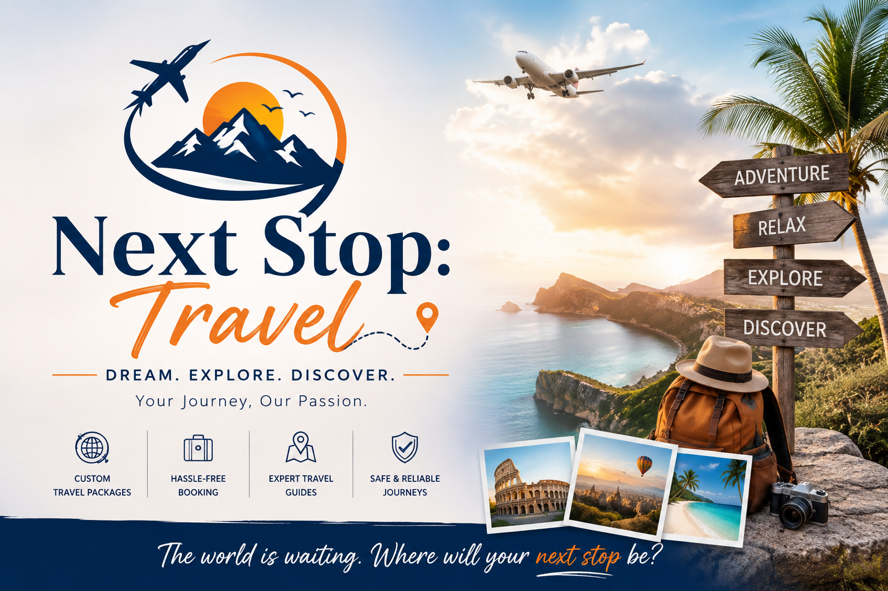

Popular Destinations
1. Seoul, South Korea
Discover a city where 600 years of ancient history perfectly blends with tomorrow’s cutting-edge future
Best Time to Visit: September to November (Autumn)
Learn more about SeoulCrafting flawless itineraries today for the unforgettable stories you'll tell tomorrow.
Next Stop Travel is a premier travel agency dedicated to turning your dream getaways into seamless realities. We handle every single detail—from custom itineraries to seamless bookings—so your only job is to show up, relax, and enjoy the journey. With our expert curation and commitment to flawless execution, we guarantee a world-class travel experience you will never regret.

Discover a city where 600 years of ancient history perfectly blends with tomorrow’s cutting-edge future
Best Time to Visit: September to November (Autumn)
Learn more about Seoul
Wander through an open-air museum where monumental ancient ruins stand alongside vibrant, cobblestone street life
Best Time to Visit: September to November (Autumn) or March to May (Spring)
Learn more about RomeEscape to an enchanting tropical paradise renowned for its volcanic mountains, iconic surf beaches, and deeply spiritual Hindu culture
Best Time to Visit: May to September (Dry Season)
Learn more about BaliJourney into a breathtaking alpine wonderland where pristine glacial lakes meet charming medieval towns and majestic mountain peaks
Best Time to Visit: June to August (Summer) or December to February (Winter)
Learn more about SwitzerlandImmerse yourself in a thrilling megacity where ultra-modern skyscrapers and quirky pop-culture hubs coexist with quiet, historic shrines
Best Time to Visit: October to November (Autumn) or April (Spring)
Learn more about TokyoExperience a dynamic coastal metropolis where modern skyscrapers meet dramatic mountain ranges and lush rainforests
Best Time to Visit: June to August (Summer)
Learn more about VancouverJourney to a breathtaking alpine basin famous for its world-renowned stargazing reserve, vibrant fields of wild lupins, and New Zealand's most photographed stone chapel
Best Time to Visit: November to December (for blooming lupins) or June to August (for winter stargazing)
Learn more about Lake TekapoImmerse yourself in a legendary city of romance and revolution, where historic squares hosted the earliest collective strides for women's suffrage
Best Time to Visit: April to May (Spring) or September to October (Autumn)
Learn more about Paris| Destination | Duration | Accommodation | Activities | Price |
|---|---|---|---|---|
| Seoul, South Korea | 7 Days / 6 Nights | Koreana Hotel | Temple tours, Palace Tours, City Panoramas | ₹1,15,000 |
| Rome, Italy | 7 Days / 6 Nights | Hotel Quirinale | Colosseum entry, Roman Forum walks, Vatican museum tours | ₹1,35,000 |
| Bali, Indonesia | 7 Days / 6 Nights | Ubud Tropical Resort | Rice terrace treks, Beach surfing, Temple visits | ₹85,000 |
| Zurich, Switzerland | 7 Days / 6 Nights | Hotel Schweizerhof | Lake cruises, Old town walks, Alpine train excursions | ₹2,10,000 |
| Tokyo, Japan | 7 Days / 6 Nights | Shinjuku Granbell Hotel | Character street tours, Skyscraper views, Shrine walks | ₹1,45,000 |
| Vancouver, Canada | 7 Days / 6 Nights | The Pinnacle Hotel | Stanley Park cycling, Rainforest canopy walks, Coastal tours | ₹1,85,000 |
| Lake Tekapo, New Zealand | 7 Days / 6 Nights | Tekapo Lake Resort | Stargazing reserve tours, Lupin field walks, Chapel visits | ₹2,30,000 |
| Paris, France | 7 Days / 6 Nights | Hotel Les Bulles | Historic square walks, Suffrage history tours, Cafe lounging | ₹1,60,000 |
| Destination | Duration | Countries | Accomodation | Price |
|---|---|---|---|---|
| Asia Tours | 21 Days / 20 Nights |
|
|
₹2,76,000 |
| Europe Tours | 21 Days / 20 Nights |
|
|
₹2,76,000 |
NOTE: All the activities mentioned in the solo tours will be included along with some special surprise activities
NOTE: The prices are listed for only the trips the price of hotel room depends on you preference
A dynamic metropolis where soaring modern skyscrapers and high-tech subways meet historic Buddhist temples, grand palaces, and bustling street markets.
Travel Tip: Buy a T-money card at any convenience store for seamless, discounted transfers across the city’s sprawling subway and bus networks.
The eternal city boasting nearly 3,000 years of globally influential art, architecture, and culture, layered over ancient ruins and vibrant neighborhood life.
Travel Tip: Bring a reusable water bottle; Rome is dotted with thousands of "nasoni" (public fountains) pouring free, ice-cold drinking water.
The famed Island of the Gods, renowned for its forested volcanic mountains, iconic terraced rice paddies, pristine beaches, and deeply spiritual culture.
Travel Tip: Dress respectfully when visiting temples by wearing a sarong and sash, which can usually be rented or borrowed at temple entrances.
A global hub for banking and finance lying at the north end of Lake Zurich, seamlessly blending clean, historic charm with cutting-edge urban design.
Travel Tip: Skip taxis and buy a Zürich Card for unlimited travel on trams, trains, buses, and ferries throughout the city and surrounding areas.
A dazzling ultramodern metropolis where neon-lit skyscraper districts coexist harmoniously with centuries-old shrines and tranquil gardens.
Travel Tip: Keep a small plastic bag in your daypack; public trash cans are extremely rare in Tokyo, so you will need to carry your garbage with you.
A bustling west coast seaport in British Columbia, celebrated for its unique combination of striking glass skyscrapers and majestic mountain backdrops.
Travel Tip: Pack a light, waterproof rain jacket regardless of the season; Vancouver’s lush Pacific Northwest climate brings frequent, sudden showers.
A breathtaking alpine destination in the South Island's Mackenzie Basin, renowned for its intense turquoise water and pristine starry night skies.
Travel Tip: Lake Tekapo sits inside the Aoraki Mackenzie International Dark Sky Reserve; turn off your flashlight and give your eyes 20 minutes to adjust to the Milky Way view.
The global capital of art, fashion, gastronomy, and culture, beautifully situated along the winding banks of the Seine River.
Travel Tip: When entering any shop or café, always greet the staff with a polite "Bonjour" to ensure warm service and show respect for local etiquette.
You need a valid passport (with 6 months validity), an approved visa, your confirmed return ticket, and hotel booking proof.
Cancellations made 30 days prior to departure are eligible for a 100% refund. Please check specific package guidelines for details.
Standard packages include airport pickup options, which can be customized or upgraded during the booking process.
Rohan Sharma ★★★★★
"Absolutely flawless Kyoto itinerary! Next Stop: Travel mapped out our entire family vacation perfectly. The custom room selection options made coordinating family suites a breeze, and their restaurant recommendations were incredible. 5/5 stars!"
Ananya Iyer ★★★★☆
"Great pricing and wonderful execution. The tour packages offer phenomenal value, and our luxury Kaiseki dinner booking was a major highlight. The only tiny hiccup was a minor delay with our airport transfer vehicle, but the agency sorted it out over WhatsApp in under ten minutes."
Elena V. ★★★★★
"Exceptional solo travel support. I was nervous about visa document requirements, but their structured booking portal handled everything seamlessly. The support team responds instantly. Will definitely use them for my next international trip!"
Marcus T. ★★★★☆
"Incredibly smooth booking process. Love how clear their website forms are, especially the automatic country-code formatting for international travelers. A solid 4.5-star experience; just wishing there were a few more hotel choices listed for the budget tier!"
Visit our agency headquarters for face-to-face travel planning consultations.